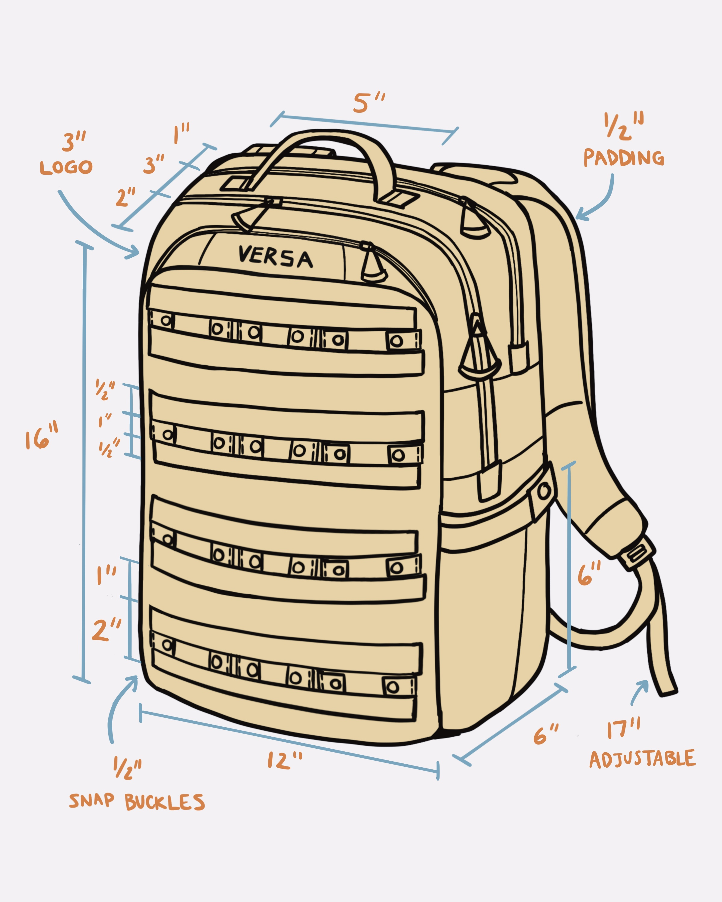
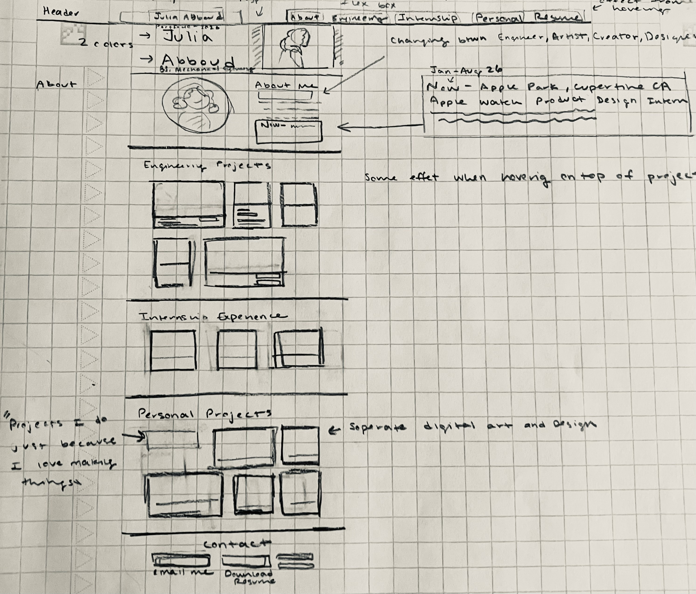
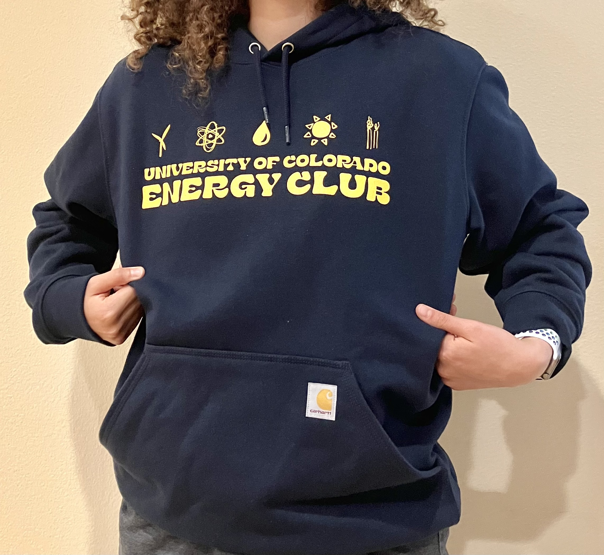
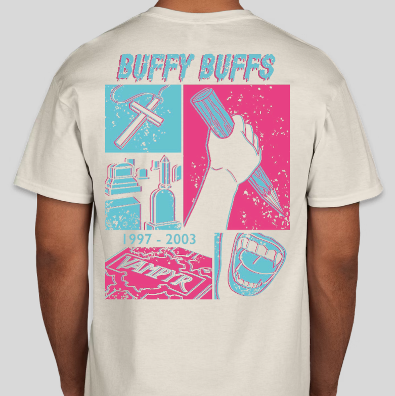
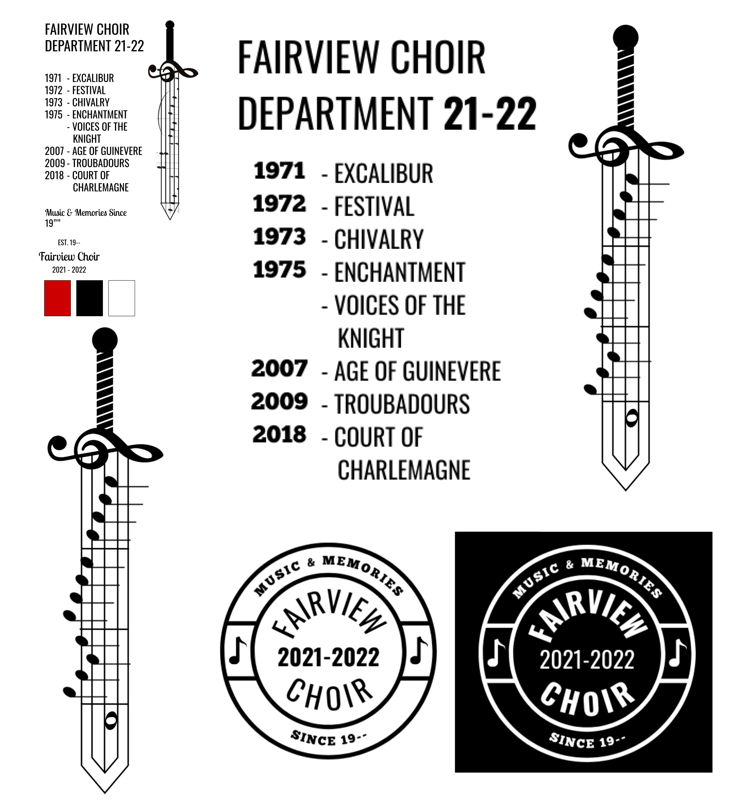

It was incredibly rewarding to see the sticker I created printed in bulk by the CU Boulder Taylor Swift Club and I hope to do more work with sticker art in the near future!
2020 – Present
Alongside my digital art, I have taken on a variety of design projects including club stickers, school apparel, logos, and this portfolio website itself! It is fun to create something tangible for a specific audience as well as to wear a shirt I made! I am looking forward to creating more design products with my digital art skills.



This Website Is Also a Design Project!
Every component on this portfolio was carefully selected and curated by me, from the typography and color palette, to the layout of each section. I wanted the visual experience to reflect not only my accomplishments, but also my personality and energy! Designing and building this site from scratch involved learning more about HTML and CSS code, as well as becoming more comfortable with how to vibe code and achieve my intended results. The comic-themed callout cards, the way the navigation bar changes colors over dark backgrounds, the website's responsiveness, and the animated features are just some examples of the intentional elements I reviewed multiple times. It was a time-intensive process, but so fun, educational, and one I am very proud of!








